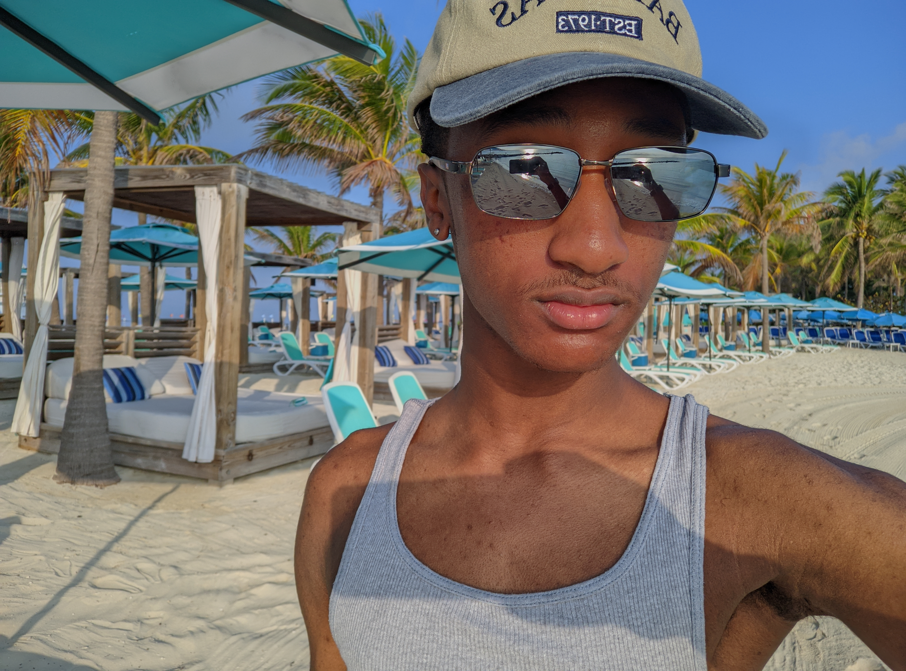
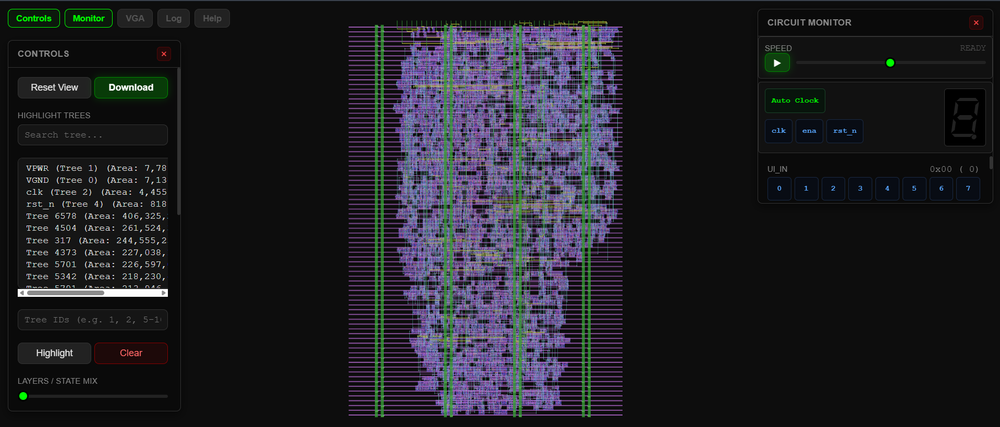
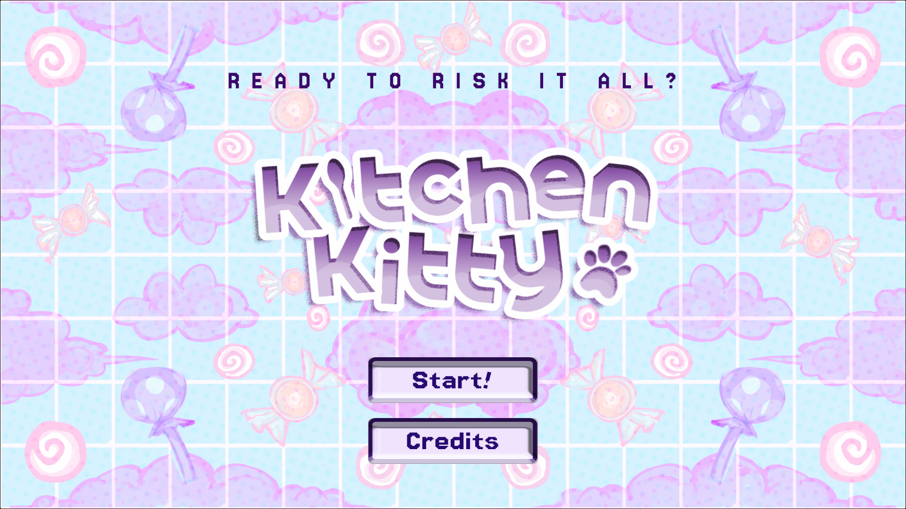
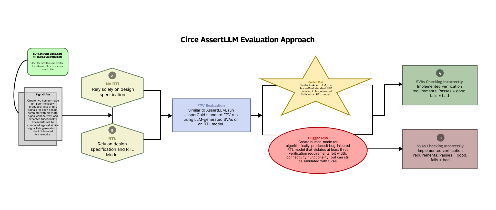

Front-end Developer, Music Producer, PC Repair Technician

Hello there! My name is Xavier and I’m a self-taught designer, producer and (okay) artist. I began designing in 2019 with mobile apps
(Over, now called GoDaddy Studio) and over time experimented with Photoshop and Photopea, Canva, and as of recently, Figma. I also began
producing in 2019 (a very productive year for me lol), mainly in the genre of EDM but with elements of other genres. Since I was so young
at the time, I didn’t want to commit to buying a DAW so early, so I used the trial version of FL Studio for 4 years (yes, 4 years. I don’t
even know how I endured that). As of now, I have purchased a license for it and continue making EDM and Bass house tracks! Drawing is another thing
I enjoy, but as more of a part-time hobby. Other things I’m passionate about are cooking, traveling, fashion, and more!


